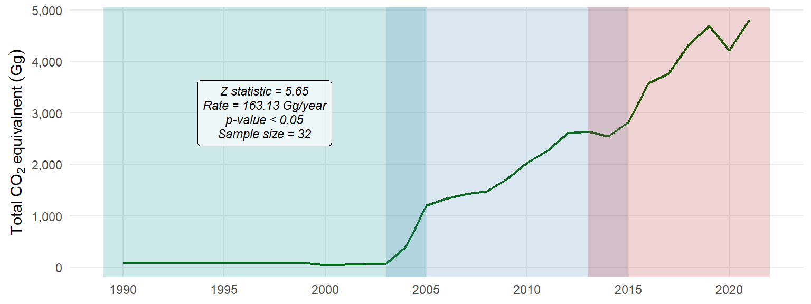
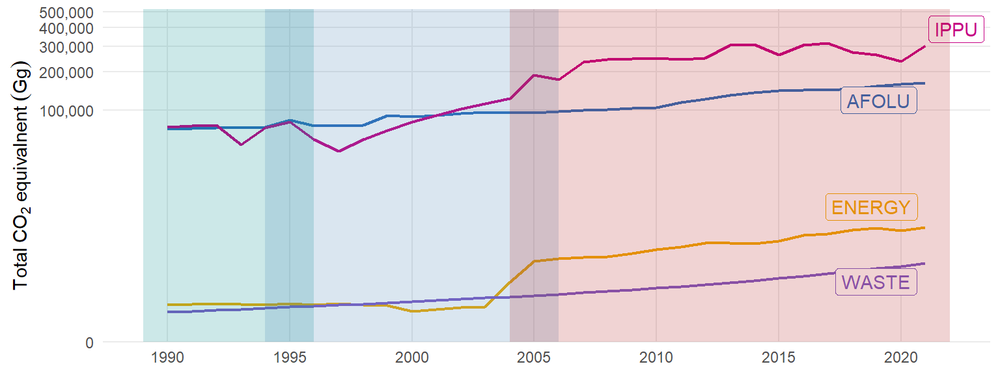

| Greenhouse gas (GHG) | Global warming potentia (GWP) |
|---|---|
| CO2 | 1 |
| CH4 | 28 |
| N2O | 273 |
| HFCs (Range) | 12–14,800 |
2 Trends in GHG emissions and removals
2.1 Overview
Tanzania’s greenhouse gas (GHG) emissions profile presents a critical overview of its contributions to global climate change. As of the latest assessments, Tanzania is classified as a low emitter on the global stage, with its emissions accounting for a small fraction of the total GHG emissions worldwide. This positioning is largely due to its development status and reliance on subsistence agriculture, which is a predominant activity in the region. The country’s emissions are primarily derived from a few key sectors, including agriculture, forestry, and land use change, which contribute significantly to methane and carbon dioxide emissions. Agricultural practices, especially livestock farming and rice cultivation, are major sources of methane emissions. Deforestation and land degradation, driven by agricultural expansion and logging, also exacerbate carbon dioxide releases into the atmosphere.
Despite these emissions, Tanzania has made notable strides in enhancing its renewable energy portfolio, focusing on sustainable practices to mitigate future emissions. The government actively promotes initiatives aimed at improving forest management, adopting cleaner agricultural technologies, and increasing the share of renewable energy sources such as hydropower, solar, and wind energy in its energy mix. Analyzing emissions by sector and gas helps identify the largest sources of emissions, prioritize mitigation actions, and track progress over time. This chapter presents the annual trends in greenhouse gas (GHG) emissions and removals in Tanzania by sector and gas from 1990 to 2021. It examines key sectors like agriculture, energy, industry, and transport, along with major GHGs such as carbon dioxide (CO2), methane (CH4), hydroflorcarbons (HFCs), and nitrous oxides (N2O). The chapter further explores and discusses the drivers of emission changes and highlights government and organizational efforts to address these challenges. The goal is to provide insights into Tanzania’s GHG emissions and their environmental and societal impacts.
2.2 Global Warming Potential
To obtain CO2 equivalent emissions, each greenhouse gas is multiplied by its Global Warming Potential (GWP-100), which represents its warming effect relative to CO2 over a 100-year period (Table 2.1). Carbon dioxide (CO2) has a GWP of 1, serving as the baseline. Methane (CH4) has a GWP of 28, meaning it is 28 times more effective at trapping heat than CO2. Nitrous oxide (N2O) has GWP of 273, indicating its substantial contribution to climate change despite its lower concentration in the atmosphere. Hydrofluorocarbons (HFCs), a group of synthetic gases, have a wide range of GWP values, from 12 to 14,800, depending on the specific compound.
2.3 Total GHG Emissions and Removal
Tanzania’s total greenhouse gas emissions in 2021 were equivalent to 475,598 GgCO2eq including the Land Use, Land Use Change and Forestry (LULUCF) Sector. The total greenhouse gas emissions have increased by 186 percent since 2000 (Table 2.2). Likewiae, the estimated CO2equ removal for 2021 were 324,022 GgCO2eq most from LULUCF, which represent about 54% increase compared to 210,536 GgCO2eq in 2000 (Table 2.2).
| GHG |
CO2 equivalnet (Gg)
|
% change | |
|---|---|---|---|
| 2000 | 2021 | ||
| Emissions | 166,423 | 475,598 | 186 |
| Removals | 210,536 | 324,022 | 54 |
While in 2021 the removed CO2 equivalent of 324,022 (Table 2.2) came from AFOLU (Table 2.3), the emitted CO2 equivalent of 475,598 (Table 2.2) is shared among key sectors (Table 2.3) with IPPU emission contributes about 64 percent, followed with AFOLu that contributes 34.77 percent (Figure 2.1). The removed CO2 equivalent was from AFOLU (Figure 2.1)
| Sector |
CO2 equivalnet (Gg)
|
|
|---|---|---|
| Emissions | Removals | |
| AFOLU | 165,357 | 324,022 |
| ENERGY | 4,812 | - |
| IPPU | 304,337 | - |
| WASTE | 1,092 | - |
2.4 Total CO2 Removal and Emission Trends
Tanzania’s GHG emissions have increased steadily between 1990 and 2021 (Figure 2.2)over, driven by population growth, agricultural expansion, and energy demand. The total CO2 equivalent emissions was estimated at approximately 13,166 Gg annually over 32 years (Figure 2.2). This value represents the combined impact of carbon dioxide (CO2), methane (CH4), and nitrous oxide (N2O) emissions, adjusted for their Global Warming Potential (GWP).
Figure 2.3 shows significant decreasing trend in total CO2 removals from AFOLU between 1996 and 2021. With an average removal of CO2 of 5,485 Gg per year suggests that AFOLU sector is playing an important role of removing CO2 from the atmophere. The removals prior to 1996 are omitted due to the lack of Land Use and Land Cover (LULC) data, which would lead to an underestimation of total removals. This omission arises because LULC data is crucial for accurately quantifying land-based carbon sequestration, including forest regrowth, afforestation, and soil carbon storage.
2.5 Total CO2 Emission Trends by Sectors
CO2-equivalent emissions from the waste sector have increased significantly from 1990 to 2021 (Figure 2.4), with an average rate of 20.7 Gg per year. This upward trend is statistically significant (z = 8.03, p < 0.001), confirming that the increase is not due to random variation. The 95% confidence interval (15.3 to 27.6 Gg per year) suggests a consistent growth rate, likely driven by increased waste generation and decomposition-related emissions.
Figure 2.5 show that there is a strong and statistically significant upward trend in the emission of CO21-equivalent emissions from the energy sector. The Sen’s slope indicates that CO21-equivalent emissions increase by rate of 163.13 Gg per year, which is significant.

Figure 2.6 shows that emissions in the AFOLU sector are increasing each year. On average, AFOLU emit CO2 equivalent of around 3,117 Gg per year.
CO2 equivalent Emissions in the IPPU sector have been rising steadily over time (Figure 2.7). On average, IPPU emit about 10,039 Gg per year of CO2 equivalent into the atmosphre. The increasing trend of CO2 equivalent is highly significant (Figure 2.7)
Over the 32-year period from 1990 to 2021, emissions of CO2 equivalent have shown consistent and significant increases across four major sectors – AFOLU (Agriculture, Forestry, and Other Land Use), IPPU (Industrial Processes and Product Use), WASTE, and ENERGY. Across all sectors, the increases in emissions are statistically significant, indicating that these trends are not due to random fluctuations but rather reflect real, sustained changes. In the AFOLU sector, emissions increased at an average rate of 3117.26 Gg/year (Figure 2.8). This continueal rising of CO2 equivalent from AFOLU reflects the increasing impact of agricultural practices, land use changes, and forestry on greenhouse gas emissions, which is crucial given the sector’s role in global carbon cycles.
Similarly, the IPPU sector experienced a positive trend of CO2 emission with an average of 10039.19 Gg per year, representing a substantial contribution of GHG to the atmosphre linked to industrial processes and product use over time. This trend highlights the growing emissions associated with industrial activities, manufacturing processes, and the use of certain products, including those involving chemicals and materials. Meanwhile, the ENERGY sector saw a more moderate increase of 163.13 units per year on average. While this rate is smaller compared to the others, the trend still points to an ongoing rise in emissions, primarily driven by the combustion of fossil fuels for energy production.

2.6 Total CO2 Emission Trends by Gas
Table 2.4 provides a detailed breakdown of greenhouse gas (GHG) emissions and removals across various sectors. In 2021, the estimated CO2 equivalent of Methane (CH4) emissions were around 157,628 Gg, primarily attributed to the Agriculture, Forestry, and Other Land Use (AFOLU) sector, with a minor contribution of 1,092 Gg from the Waste sector (Figure 2.9). The estimated CO2 equivalent of Nitrous oxide (N2O) emissions are significantly low with 7,729 Gg in 2021, attributed from the AFOLU sector alone.
| GHG |
CO2 equivalent (Gg)
|
||||
|---|---|---|---|---|---|
| AFOLU | ENERGY | IPPU | WASTE | ||
| Emissions | CH4 | 157,627.6 | - | - | 1,092.3 |
| N2O | 7,729.1 | - | - | 0.0 | |
| CO2 | - | 4,811.7 | 113,081.7 | 0.0 | |
| HFC | - | - | 191,255.5 | - | |
| Removals | CO2 | −324,021.7 | - | - | - |
Carbon dioxide (CO2) emissions in 2021 were around 48,120 Gg from Energy sector and 113,082 Gg from the IPPU sector, with no emissions from AFOLU or Waste (Table 2.4). Conversely, CO2 removals are substantial that AFOLU alone removed around 324,022 Gg in 2021. Hydrofluorocarbons (HFCs), which are synthetic gases, emitted an estimated CO2 equivalent of 191,256 Gg from the IPPU sector. These finings highlights the varying contributions of different sectors to GHG emissions and underscores the importance of AFOLU in both emissions and removals (Figure 2.9).

2.6.1 METHANE (CH4)
Table 2.4 indicates that CH4 is contributed by AFOLU in large portion and small portion from WASTE.
| Code | Key category | Total CH{4} (Gg) | Percentage | Cumulative |
|---|---|---|---|---|
| 3.A.1.a.ii | Other Cattle | 2634761.07 | 80.52 | 80.52 |
| 3.A.1.d | Goats | 245524.38 | 7.50 | 88.03 |
| 3.A.1.a.i | Dairy Cows | 120916.88 | 3.70 | 91.72 |
| 3.A.2.a.ii | Other cattle | 84992.29 | 2.60 | 94.32 |
| 3.A.1.c | Sheep | 80258.97 | 2.45 | 96.77 |
| 3.C | Aggregate sources and non | 38819.92 | 1.19 | 97.96 |
| 3.C.7 | Rice cultivation | 20482.59 | 0.63 | 98.59 |
| 3.C.1.c | Burning in Grassland | 11630.04 | 0.36 | 98.94 |
| 3.A.2.d | Goats | 10803.07 | 0.33 | 99.27 |
| 4.A.2 | Unmanaged Waste Disposal Sites | 8641.41 | 0.26 | 99.54 |
| 3.C.1.a | Burning in Forest Land | 6649.18 | 0.20 | 99.74 |
| 3.A.2.c | Sheep | 3210.36 | 0.10 | 99.84 |
| 3.A.2.a.i | Dairy cows | 2628.63 | 0.08 | 99.92 |
| 4.A.1 | Managed Waste Disposal Sites | 841.41 | 0.03 | 99.94 |
| 3.A.2.i | Poultry | 605.46 | 0.02 | 99.96 |
| 3.A.1.i | Poultry | 413.96 | 0.01 | 99.97 |
| 3.A.1.h | Swine | 399.85 | 0.01 | 99.99 |
2.6.2 Hydrochlorocarbons (HFCs)
Table 2.4 indicates that HFC4 is mainly emitted with IPPU
| Code | Key category | Total CH{4} (Gg) | Percentage | Cumulative |
|---|---|---|---|---|
| 2.F | Product Uses as Substitutes for Ozone Depleting Substances | 3232353.8 | 31.78 | 31.78 |
| 2 | Industrial Processes and Product Use | 3135937.5 | 30.84 | 62.62 |
| 2.F.3 | Fire Protection | 1989711.3 | 19.57 | 82.19 |
| 2.F.1 | Refrigeration and Air Conditioning | 665328.1 | 6.54 | 88.73 |
| 2.F.1.a | Refrigeration and Stationary Air Conditioning | 665328.1 | 6.54 | 95.27 |
| 2.F.5 | Solvents | 473560.1 | 4.66 | 99.93 |
2.6.3 Carbondioxide Emission (CO2)
Table 2.4 indicates that CO2 is mainly emitted with IPPU
| Code | Key category | Total CH{4} (Gg) | Percentage | Cumulative |
|---|---|---|---|---|
| 2 | Industrial Processes and Product Use | 2384311.46 | 31.37 | 31.37 |
| 2.H | Other | 2346658.38 | 30.88 | 62.25 |
| 2.H.1 | Pulp and Paper Industry | 2258481.50 | 29.72 | 91.97 |
| 3.B.2.a | Cropland Remaining Cropland | 264722.50 | 3.48 | 95.46 |
| 2.H.2 | Food and Beverages Industry | 88176.88 | 1.16 | 96.62 |
| 3.B.2.b.i | Forest Land converted to Cropland | 78576.58 | 1.03 | 97.65 |
| Natural Gas Liquids | NA | 44440.98 | 0.58 | 98.24 |
| 2.A | Mineral Industry | 27086.99 | 0.36 | 98.59 |
| 2.A.1 | Cement production | 25842.00 | 0.34 | 98.93 |
| 3.B.2.b.ii | Grassland converted to Cropland | 13955.37 | 0.18 | 99.12 |
| 3.B.5.b.ii | Cropland converted to Settlements | 12283.12 | 0.16 | 99.28 |
| 3.B.6.b.iii | Grassland converted to Other Land | 10093.52 | 0.13 | 99.41 |
| 2.C | Metal Industry | 5658.63 | 0.07 | 99.48 |
2.6.4 Carbondioxide Removals (CO2)
Table 2.4 indicates that CO2 is mainly emitted with IPPU
| Code | Key category | Total CH{4} (Gg) | Percentage | Cumulative |
|---|---|---|---|---|
| 3.B.1.a | Forest land Remaining Forest land | -4085089.68 | 59.66 | 59.66 |
| 3.B.1.b.i | Cropland converted to Forest Land | -988904.44 | 14.44 | 74.10 |
| 3.B.3.b.ii | Cropland converted to Grassland | -627872.39 | 9.17 | 83.27 |
| 3.B.3.b.i | Forest Land converted to Grassland | -523980.96 | 7.65 | 90.93 |
| 3.B.3.a | Grassland Remaining Grassland | -479576.49 | 7.00 | 97.93 |
| 3.B.1.b.ii | Grassland converted to Forest Land | -83424.97 | 1.22 | 99.15 |
| 3.B.1.b.v | Other Land converted to Forest Land | -26942.60 | 0.39 | 99.54 |
| 3.B.3.b.v | Other Land converted to Grassland | -10843.51 | 0.16 | 99.70 |
| 3.B.2.a | Cropland Remaining Cropland | -10713.77 | 0.16 | 99.86 |
| 3.B.1.b.iv | Settlements converted to Forest Land | -3653.59 | 0.05 | 99.91 |
| 3.B.2.b.v | Other Land converted to Cropland | -2983.42 | 0.04 | 99.95 |
| 3.B.3.b.iv | Settlements converted to Grassland | -2028.23 | 0.03 | 99.98 |
| 3.D.1 | Harvested Wood Products | -913.34 | 0.01 | 100.00 |
| 3.B.5.b.v | Other Land converted to Settlements | -227.33 | 0.00 | 100.00 |